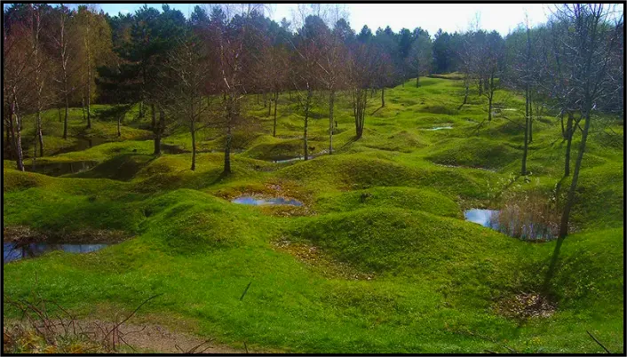
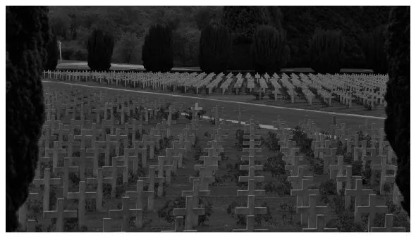

Verdun
Verdun? This name should not be unfamiliar to you.
The trigger.
He trigger for this long war?
It was the assassination of Franz Ferdinand, an Austrian politician.
He was assassinated on 28 June 1914 in Sarajevo, Austria-Hungary.
This war was between two sides.
The Triple Entente, consisting of the United Kingdom, the Russian Empire and France.
The Triple Alliance, consisting of the German Empire, the Austro-Hungarian Empire and the Kingdom of Italy.
The beginning of an era.
On 28 June 1914 the First World War began.
During these long years of war, there were several battles.
But the Battle of Verdun is one of the most famous.
Nicknamed the "mother of all battles" because it was the longest.
It was in February 1916, on the 21st, that the battle of Verdun began.
The battle will make 163 000 dead and 216 000 wounded on the French side.
And more than 143,000 dead and 196,000 wounded on the German side.
More than 53 million shells were fired, i.e. one shell every 2 seconds.
It will wipe 9 villages off the map and 6 have not been rebuilt.
It is on December 18, 1916, that France wins the battle of Verdun.
November 11, 1918 is the end of the world war.
Former battlefield
in a forest near Verdun.
A rebuilt town.
Verdun is a city that is very much focused on its past.br>When we talk about Verdun, we only think about this battle.
But the city and its inhabitants did not remain idle after this battle.
Once the war was over Verdun was rebuilt, some villages were not repaired.
The small town of Verdun is located 80km from Metz.
It is a commune in France located in the North East.
After the end of the war Verdun has not been completely rebuilt.
Museums and memorials have been built in some places.
Like the ossuary of Douaumont.
A place that gathers 16,142 graves of French soldiers of all religions.

Douaumont Ossuary, January 2016.
Discover:
Places of
remembrance